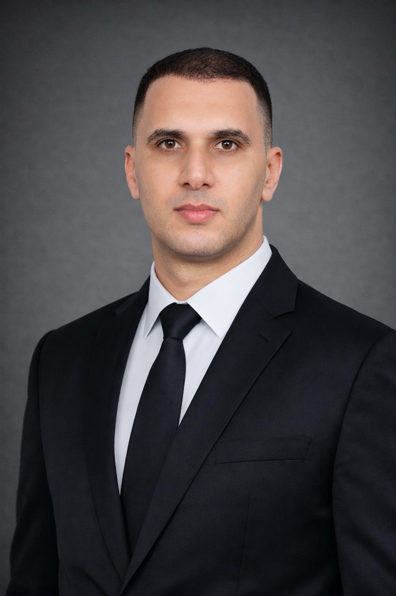

المملكة المغربية · KINGDOM OF MOROCCO
ICA MOROCCO
المركز الرسمي للتحقق من الدرجات والشهادات الدولية
Official Dan & International Credential Center
التحقق من الدرجة والشهادة
أدخل الاسم الإنجليزي الرسمي أو رقم الشهادة للتحقق من سجل المقر.
Official headquarters records · Republic of Korea
MOROCCO · OFFICIAL REPRESENTATIVE
NAJIM BOUARRAKIA
الممثل الرسمي للمغرب · معين رسمياً من المقر الدولي في جمهورية كوريا
Official Morocco Representative · Appointed by International Headquarters · Republic of Korea

🇲🇦
GLOBAL NEWS24 · MOROCCO
MOROCCO TO THE WORLD
أخبار المغرب إلى العالم
Morocco · Sports · Culture · Martial Arts · Global Network
ENTER MOROCCO EDITION →